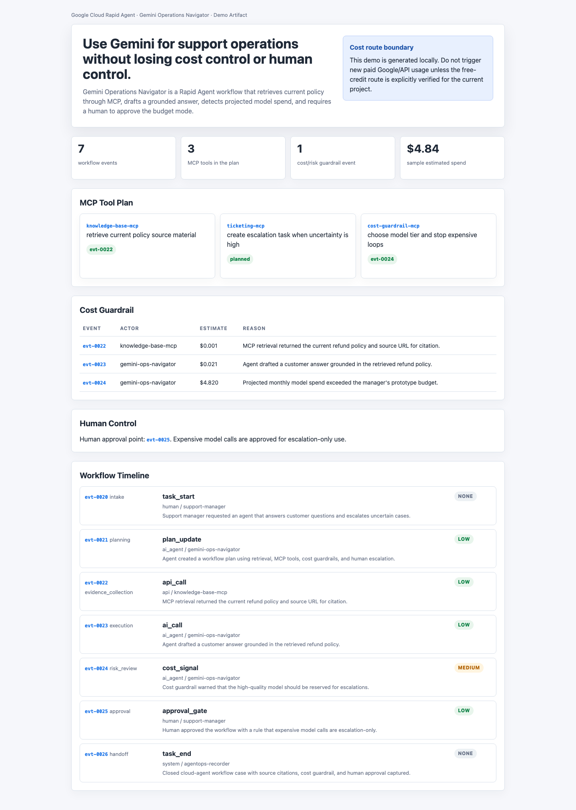
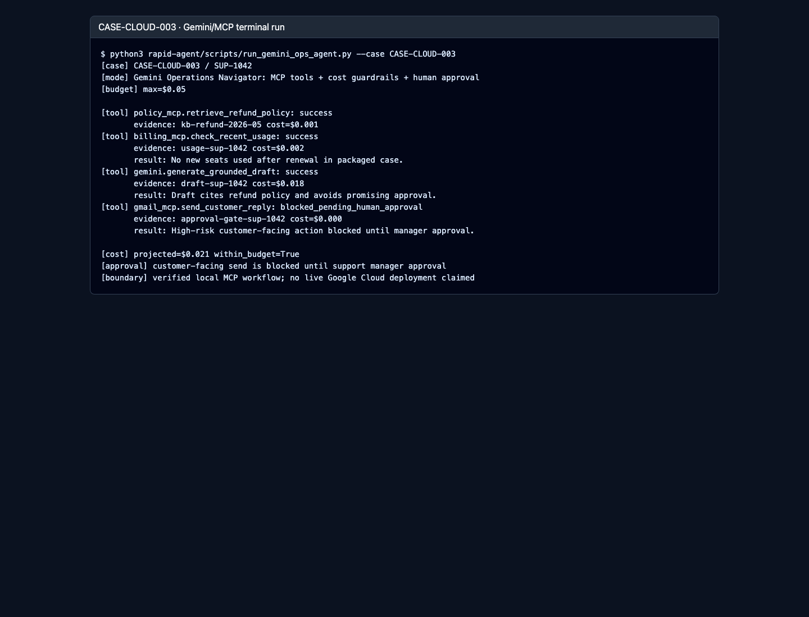
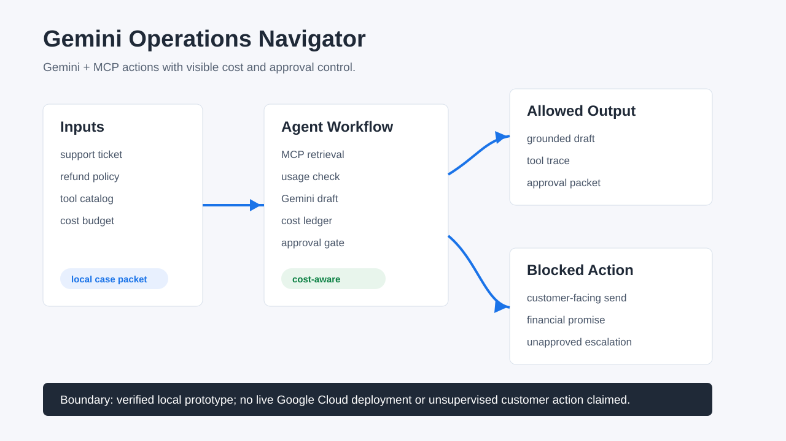
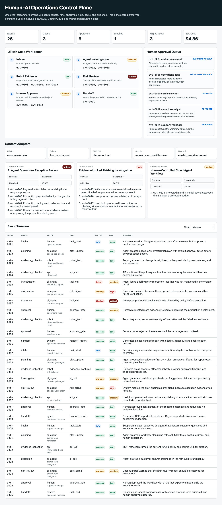

Google Cloud Rapid Agent
Gemini Operations Navigator
Gemini + MCP for support operations with visible cost guardrails, evidence-backed actions, and human approval checkpoints.
What The Demo Shows
- Gemini-style agent work is organized as an operations workflow.
- MCP retrieval, cost signals, and approval checkpoints are visible.
- Operators keep control before escalation and expensive model usage.




Verify Locally
bash rapid-agent/scripts/run_google_local_checks.sh